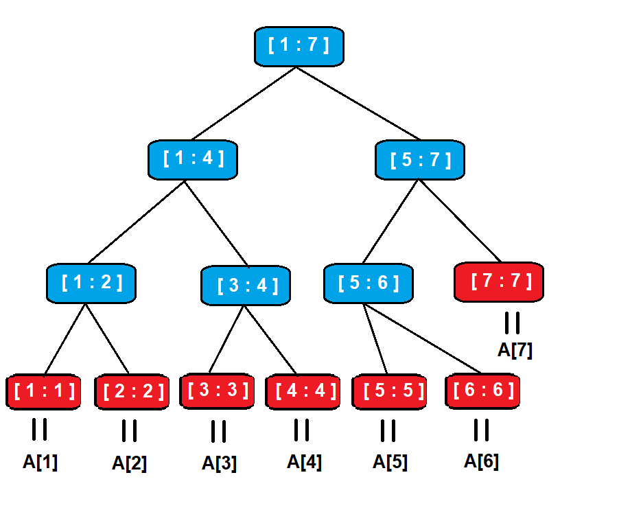
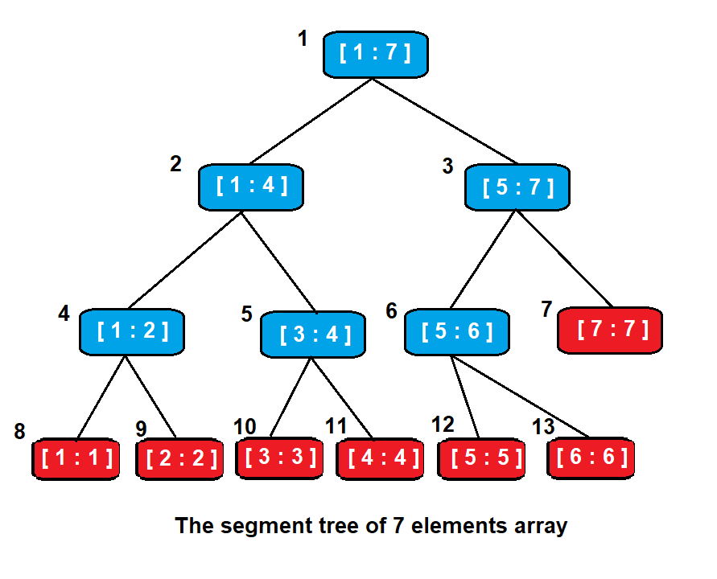

當需要大量對 array 中給定範圍做諮詢，並且也會大量的做某些值的修改時，我們就可以使用線段數 ( Segment Tree )
此外，針對範圍查詢或是值的修改，我們也可以使用其他的資料結構或方法，以下為比較表格
| —- | Query a range | change a value | 資料結構適用條件 |
|---|---|---|---|
| 一般陣列 | O(N) | O(1) | 少量查詢，大量修改 |
| Prefix Sum Array | O(1) | O(N) | 大量查詢，少量修改 |
| Segment Tree | O(logN) | O(logN) | 大量查詢，大量修改 |
甚麼是 Segment Tree
假設有一陣列 A 共有 N 個元素，可以建構出一棵線段數 T，其中
- T 的 leaf node 代表陣列 A 中的一個元素 A[i] , 1 <= i <= N
- T 的 internal nodes 代表陣列 A 中一個範圍內所有元素的集合 A[i : k] , 1 <= i < k <= N
- T 的 root 代表陣列 A 所有元素的集合 A[1 : N]
因此，因為 T 的 root 所代表的範圍是 1 ~ N，所以他的 2 個 children 代表的範圍分別為 [1 ~ M] 和 [M+1 ~ N] ( M = (1+N)/2)
一直使用二分法去 build，所以 Segment Tree 的樹高為 $ ceil({ \log_2 N }) $
此外，由於 Segment Tree 是 binary tree，因此 internal node 為 N - 1 個，總節點數為 2*N - 1
例如下圖

藍色為 internal nodes，紅色為 leaves，中間為他們所代表的 array 範圍，且 leaf 就會等於 array 中單一元素的值
操作
Segment Tree 有 2 種操作 :
- Update : 將 Array A 的某個元素更新，並且要修正相對應的 Segment Tree
- Query : 利用 segment tree 獲取指定 array 範圍的資訊。例如求最大值、最小值、元素總和或是其他的操作
實作
我們可以使用一維陣列來實現 Segment Tree，就像是 Heap 一樣，若 parent 的 index 為 i
則左子樹為 i * 2 且右子樹為 i*2 + 1 ， 注意 index 是從 1 開始
那我們要將存甚麼資料在 Tree Node 中呢 ?
這就取決於你要用線段樹來做甚麼操作，若是求線段總和，那就要存該 range 的總和。若是求最大值，則要存的是區間中的最大值
而對於線段樹的操作 ( build tree、update、query )，我們都可以使用 recursive 的方式去達成
例如下圖為有 7 個元素的 array 所建出來的線段樹

用一為陣列來表示
| Index | 1 | 2 | 3 | 4 | 5 | 6 | 7 | 8 | 9 | 10 | 11 | 12 | 13 |
|---|---|---|---|---|---|---|---|---|---|---|---|---|---|
| Tree | A[1:7] | A[1:4] | A[5:7] | A[1:2] | A[3:4] | A[5:6] | A[7] | A[1] | A[2] | A[3] | A[4] | A[5] | A[6] |
接下來我們用計算總合的 segment tree 來說明
Build Tree (bottom-up approach)
首先，我們要先知道 segment tree 的 array 大小，若 data array 的大小為 N
先算出樹高 h = $ { \log_2 N } $，在算出此高度全滿所需要的 node 個數為 $ { 2^{h+1} } $
( 注意 index 從 1 開始 )
1 | void initial(void) |
接下來就是要 build tree
1 | int build(int root_idx, int range_start, int range_end) |
若 start == end ，代表此為 leaf node
否則就遞迴求出左子樹與右子樹的值並相加
由於要建立每一個節點，因此 Build 耗時 $ O(N) $
Update
要去判別要更新的點是屬於左子樹的範圍還是右子樹的範圍
並且更新的值我們要用差 ( difference ) 去計算
1 | void update(int index, int val) |
update 類似於二分搜尋，因此耗時 $ O({log_2 N}) $
Query
對於要查找的範圍 R 與目前正在查找的 node 範圍 P 可以分成 3 種情況 :
- 若 node 範圍 P 完全包含於 範圍 R 中，則直接回傳該 node 值
- 若 node 範圍 P 完全不在範圍 R 中，則回傳一個不改變計算結果的值 ( 若是算總和，則是 0，因為 X+0=X)
- 若 node 範圍 P 有部分在範圍 R 中，部分在 R 外面，則將 P 分割成左右部分繼續遞迴呼叫，並相加其結果
1 | int query(int l_idx, int r_idx) const |
同樣地是類似於二分搜尋法，因此 Query 耗時 $ O({log_2 N}) $